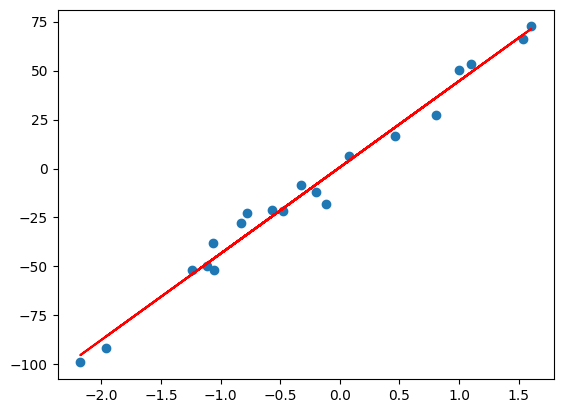

REGRESI LINIER#
Regresi linear adalah teknik analisis data yang memprediksi nilai data yang tidak diketahui dengan menggunakan nilai data lain yang terkait dan diketahui. Secara matematis memodelkan variabel yang tidak diketahui atau tergantung dan variabel yang dikenal atau independen sebagai persamaan linier. Misalnya, anggaplah Anda memiliki data tentang pengeluaran dan pendapatan Anda untuk tahun lalu. Teknik regresi linier menganalisis data ini dan menentukan bahwa pengeluaran Anda adalah setengah dari penghasilan Anda. Mereka kemudian menghitung biaya masa depan yang tidak diketahui dengan mengurangi separuh pendapatan yang diketahui di masa depan.
import numpy as np
from sklearn.linear_model import LinearRegression
from sklearn.datasets import make_regression
from matplotlib import pyplot
X_test, y_test = make_regression(n_samples=20, n_features=1, noise=10)
reg = LinearRegression().fit(X_test, y_test)
reg.score(X_test, y_test)
reg.coef_
reg.intercept_
reg.predict(np.array([[3]]))
array([132.83944876])
x=X_test.tolist()
y=y_test.tolist()
import pandas as pd
data = {'X':x,
'Y':y}
df=pd.DataFrame(data)
df.head(20)
| X | Y | |
|---|---|---|
| 0 | [-0.20310565071170683] | -12.229606 |
| 1 | [-1.0673622880147478] | -38.215511 |
| 2 | [-1.114135783940101] | -49.687543 |
| 3 | [-0.4751281074944401] | -21.845942 |
| 4 | [-0.8306124379903725] | -27.992477 |
| 5 | [-0.7785297238209093] | -22.701266 |
| 6 | [-1.9584917270565652] | -91.488225 |
| 7 | [1.5347487419156396] | 66.383618 |
| 8 | [-1.2413128514961838] | -51.625840 |
| 9 | [-0.32197629491627616] | -8.586533 |
| 10 | [0.9977337054962956] | 50.179450 |
| 11 | [1.604133737208623] | 72.530208 |
| 12 | [0.4657126801471313] | 16.506464 |
| 13 | [-0.5680966346113403] | -21.439261 |
| 14 | [0.07634462770671072] | 6.434135 |
| 15 | [1.1028360844102914] | 53.350149 |
| 16 | [-2.1764049406679993] | -99.055232 |
| 17 | [0.8042309053798973] | 27.069546 |
| 18 | [-1.054766785650597] | -52.060530 |
| 19 | [-0.11830144889513537] | -17.949049 |
reg.coef_
array([44.07689719])
reg.intercept_
0.6087571981178019
pyplot.scatter(X_test,y_test)
Y_plot=reg.coef_*X_test+reg.intercept_
pyplot.plot(X_test,Y_plot,color='r')
pyplot.show()
